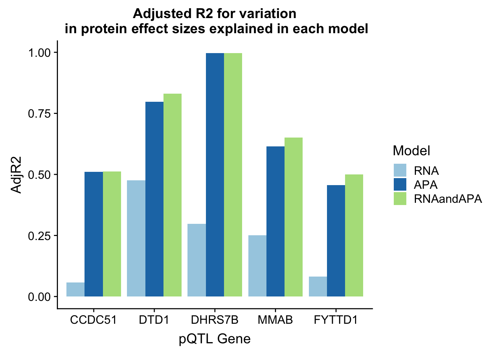

Explaining pQTLS
Briana Mittleman
11/29/2018
Last updated: 2018-12-03
workflowr checks: (Click a bullet for more information)-
✔ R Markdown file: up-to-date
Great! Since the R Markdown file has been committed to the Git repository, you know the exact version of the code that produced these results.
-
✔ Environment: empty
Great job! The global environment was empty. Objects defined in the global environment can affect the analysis in your R Markdown file in unknown ways. For reproduciblity it’s best to always run the code in an empty environment.
-
✔ Seed:
set.seed(12345)The command
set.seed(12345)was run prior to running the code in the R Markdown file. Setting a seed ensures that any results that rely on randomness, e.g. subsampling or permutations, are reproducible. -
✔ Session information: recorded
Great job! Recording the operating system, R version, and package versions is critical for reproducibility.
-
Great! You are using Git for version control. Tracking code development and connecting the code version to the results is critical for reproducibility. The version displayed above was the version of the Git repository at the time these results were generated.✔ Repository version: 17b336b
Note that you need to be careful to ensure that all relevant files for the analysis have been committed to Git prior to generating the results (you can usewflow_publishorwflow_git_commit). workflowr only checks the R Markdown file, but you know if there are other scripts or data files that it depends on. Below is the status of the Git repository when the results were generated:
Note that any generated files, e.g. HTML, png, CSS, etc., are not included in this status report because it is ok for generated content to have uncommitted changes.Ignored files: Ignored: .DS_Store Ignored: .Rhistory Ignored: .Rproj.user/ Ignored: data/.DS_Store Ignored: output/.DS_Store Untracked files: Untracked: KalistoAbundance18486.txt Untracked: analysis/DirectionapaQTL.Rmd Untracked: analysis/ncbiRefSeq_sm.sort.mRNA.bed Untracked: analysis/snake.config.notes.Rmd Untracked: analysis/verifyBAM.Rmd Untracked: data/18486.genecov.txt Untracked: data/APApeaksYL.total.inbrain.bed Untracked: data/ChromHmmOverlap/ Untracked: data/GM12878.chromHMM.bed Untracked: data/GM12878.chromHMM.txt Untracked: data/LocusZoom/ Untracked: data/NuclearApaQTLs.txt Untracked: data/PeakCounts/ Untracked: data/PeaksUsed/ Untracked: data/RNAkalisto/ Untracked: data/TotalApaQTLs.txt Untracked: data/Totalpeaks_filtered_clean.bed Untracked: data/YL-SP-18486-T-combined-genecov.txt Untracked: data/YL-SP-18486-T_S9_R1_001-genecov.txt Untracked: data/apaExamp/ Untracked: data/bedgraph_peaks/ Untracked: data/bin200.5.T.nuccov.bed Untracked: data/bin200.Anuccov.bed Untracked: data/bin200.nuccov.bed Untracked: data/clean_peaks/ Untracked: data/comb_map_stats.csv Untracked: data/comb_map_stats.xlsx Untracked: data/comb_map_stats_39ind.csv Untracked: data/combined_reads_mapped_three_prime_seq.csv Untracked: data/diff_iso_trans/ Untracked: data/ensemble_to_genename.txt Untracked: data/example_gene_peakQuant/ Untracked: data/filtered_APApeaks_merged_allchrom_refseqTrans.closest2End.bed Untracked: data/filtered_APApeaks_merged_allchrom_refseqTrans.closest2End.noties.bed Untracked: data/first50lines_closest.txt Untracked: data/gencov.test.csv Untracked: data/gencov.test.txt Untracked: data/gencov_zero.test.csv Untracked: data/gencov_zero.test.txt Untracked: data/gene_cov/ Untracked: data/joined Untracked: data/leafcutter/ Untracked: data/merged_combined_YL-SP-threeprimeseq.bg Untracked: data/mol_overlap/ Untracked: data/mol_pheno/ Untracked: data/nom_QTL/ Untracked: data/nom_QTL_opp/ Untracked: data/nom_QTL_trans/ Untracked: data/nuc6up/ Untracked: data/other_qtls/ Untracked: data/pQTL_otherphen/ Untracked: data/peakPerRefSeqGene/ Untracked: data/perm_QTL/ Untracked: data/perm_QTL_opp/ Untracked: data/perm_QTL_trans/ Untracked: data/perm_QTL_trans_filt/ Untracked: data/reads_mapped_three_prime_seq.csv Untracked: data/smash.cov.results.bed Untracked: data/smash.cov.results.csv Untracked: data/smash.cov.results.txt Untracked: data/smash_testregion/ Untracked: data/ssFC200.cov.bed Untracked: data/temp.file1 Untracked: data/temp.file2 Untracked: data/temp.gencov.test.txt Untracked: data/temp.gencov_zero.test.txt Untracked: output/picard/ Untracked: output/plots/ Untracked: output/qual.fig2.pdf Unstaged changes: Modified: analysis/28ind.peak.explore.Rmd Modified: analysis/39indQC.Rmd Modified: analysis/apaQTLoverlapGWAS.Rmd Modified: analysis/cleanupdtseq.internalpriming.Rmd Modified: analysis/coloc_apaQTLs_protQTLs.Rmd Modified: analysis/dif.iso.usage.leafcutter.Rmd Modified: analysis/diff_iso_pipeline.Rmd Modified: analysis/explore.filters.Rmd Modified: analysis/flash2mash.Rmd Modified: analysis/overlapMolQTL.Rmd Modified: analysis/overlap_qtls.Rmd Modified: analysis/peakOverlap_oppstrand.Rmd Modified: analysis/pheno.leaf.comb.Rmd Modified: analysis/swarmPlots_QTLs.Rmd Modified: analysis/test.max2.Rmd Modified: code/Snakefile
Expand here to see past versions:
| File | Version | Author | Date | Message |
|---|---|---|---|---|
| Rmd | 17b336b | Briana Mittleman | 2018-12-03 | add random |
| html | 8bb97f6 | Briana Mittleman | 2018-12-03 | Build site. |
| Rmd | 8b45f35 | Briana Mittleman | 2018-12-03 | add anova |
| html | dd06ccc | Briana Mittleman | 2018-12-03 | Build site. |
| Rmd | 37ef750 | Briana Mittleman | 2018-12-03 | add graph for top 5 qtls |
| html | 210b58b | Briana Mittleman | 2018-11-29 | Build site. |
| Rmd | 413c8fd | Briana Mittleman | 2018-11-29 | add filter QTL analysis and start explain pqtl |
In this analysis I want to look at how well the eQTLs and apaQTLs an explain pQTLs. I will use linear models on the effect sizes.
Libraries
library(workflowr)This is workflowr version 1.1.1
Run ?workflowr for help getting startedlibrary(tidyverse)── Attaching packages ───────────────────────────────────────────────────────── tidyverse 1.2.1 ──✔ ggplot2 3.0.0 ✔ purrr 0.2.5
✔ tibble 1.4.2 ✔ dplyr 0.7.6
✔ tidyr 0.8.1 ✔ stringr 1.3.1
✔ readr 1.1.1 ✔ forcats 0.3.0── Conflicts ──────────────────────────────────────────────────────────── tidyverse_conflicts() ──
✖ dplyr::filter() masks stats::filter()
✖ dplyr::lag() masks stats::lag()library(reshape2)
Attaching package: 'reshape2'The following object is masked from 'package:tidyr':
smithslibrary(broom)
library(cowplot)
Attaching package: 'cowplot'The following object is masked from 'package:ggplot2':
ggsaveInput the pQTLs (10% FDR) and gene names
geneNames=read.table("../data/ensemble_to_genename.txt", sep="\t", header=T,stringsAsFactors = F)
pQTL=read.table("../data/other_qtls/fastqtl_qqnorm_prot.fixed.perm.out", col.names = c("Gene.stable.ID", "nvar", "shape1", "shape2", "dummy", "sid", "dist", "npval", "slope", "ppval", "bpval"), header = F, stringsAsFactors = F) %>% inner_join(geneNames, by="Gene.stable.ID") %>% dplyr::select("Gene.name","Gene.stable.ID", "nvar", "shape1", "shape2", "dummy", "sid", "dist", "npval", "slope", "ppval", "bpval")
pQTL$bh=p.adjust(pQTL$bpval, method="fdr")
pQTL_sig=pQTL %>% filter(-log10(bh)> 1) Example CCDC51
Start with the exanple with the highest effect size:
CCDC51- ENSG00000164051 3:48476431
I need all of the results for this snp gene pair from the total, nuclear, and RNA nominal files. I can make a python script that will take the gene name and snp and create the relevent dataframe.
files: * /project2/gilad/briana/threeprimeseq/data/nominal_APAqtl_trans/filtered_APApeaks_merged_allchrom_refseqGenes_pheno_Nuclear_NomRes.txt
* /project2/gilad/briana/threeprimeseq/data/nominal_APAqtl_trans/filtered_APApeaks_merged_allchrom_refseqGenes_pheno_Total_NomRes.txt
* /project2/gilad/briana/threeprimeseq/data/molecular_QTLs/nom/fastqtl_qqnorm_RNAseq_phase2.fixed.nominal.out (need the ENSG ID)
APAandRNAfromProtQTLs.py
#use this by inserting a gene, gene_ensg (from prot), and snp for the protien QTLs
def main(gene, gene_ensg,snp):
out_prot=open("/project2/gilad/briana/threeprimeseq/data/protQTL_otherphen/%s_%s_Protres.txt"%(gene, snp), "w")
out_RNA=open("/project2/gilad/briana/threeprimeseq/data/protQTL_otherphen/%s_%s_RNAres.txt"%(gene, snp), "w")
out_Total=open("/project2/gilad/briana/threeprimeseq/data/protQTL_otherphen/%s_%s_Totalres.txt"%(gene, snp), "w")
out_Nuclear=open("/project2/gilad/briana/threeprimeseq/data/protQTL_otherphen/%s_%s_Nuclearres.txt"%(gene, snp), "w")
for ln in open("/project2/gilad/briana/threeprimeseq/data/nominal_APAqtl_trans/filtered_APApeaks_merged_allchrom_refseqGenes_pheno_Nuclear_NomRes.txt", "r"):
s=ln.split()[1]
g=ln.split()[0].split(":")[3].split("_")[0]
if g==gene:
out_Nuclear.write(ln)
for ln in open("/project2/gilad/briana/threeprimeseq/data/nominal_APAqtl_trans/filtered_APApeaks_merged_allchrom_refseqGenes_pheno_Total_NomRes.txt", "r"):
s=ln.split()[1]
g=ln.split()[0].split(":")[3].split("_")[0]
if g==gene:
out_Total.write(ln)
for ln in open("/project2/gilad/briana/threeprimeseq/data/molecular_QTLs/nom/fastqtl_qqnorm_RNAseq_phase2.fixed.nominal.out", "r"):
s=ln.split()[1]
g=ln.split()[0]
if gene_ensg in g:
out_RNA.write(ln)
for ln in open("/project2/gilad/briana/threeprimeseq/data/molecular_QTLs/nom/fastqtl_qqnorm_prot.fixed.nominal.out", "r"):
s=ln.split()[1]
g=ln.split()[0]
if gene_ensg in g:
out_prot.write(ln)
out_Total.close()
out_Nuclear.close()
out_RNA.close()
out_prot.close()
if __name__ == "__main__":
import sys
gene=sys.argv[1]
gene_ensg=sys.argv[2]
snp=sys.argv[3]
main(gene, gene_ensg, snp)
CCDC51_APAandRNAfromProtQTLs.sh
#!/bin/bash
#SBATCH --job-name=CCDC51_APAandRNAfromProtQTLs
#SBATCH --account=pi-yangili1
#SBATCH --time=24:00:00
#SBATCH --output=CCDC51_APAandRNAfromProtQTLs.out
#SBATCH --error=CCDC51_APAandRNAfromProtQTLs.err
#SBATCH --partition=broadwl
#SBATCH --mem=12G
#SBATCH --mail-type=END
module load python
python APAandRNAfromProtQTLs.py CCDC51 ENSG00000164051 3:48476431 I first want to look at the effect sizes. I am interested in understanding the directions of the effect sizes.
3:48728204. This genotype is in the genotype file twice. I am gonig to remove this snp from the analysis.
nom_names=c("gene", "snp", "dist", "pval", "slope")
CCDC51_apaTot=read.table("../data/pQTL_otherphen/CCDC51_3:48476431_Totalres.txt", col.names = nom_names, stringsAsFactors = F) %>% separate(gene, sep = ":", into=c("chr", "start", "end", "id")) %>% separate(id, sep = "_", into=c("gene", "strand", "peak")) %>% select(snp,peak, slope)
CCDC51_apaTot=filter(CCDC51_apaTot, !grepl("3:48728204",snp))
CCDC51_apaNuc=read.table("../data/pQTL_otherphen/CCDC51_3:48476431_Nuclearres.txt", col.names = nom_names, stringsAsFactors = F) %>% separate(gene, sep = ":", into=c("chr", "start", "end", "id")) %>% separate(id, sep = "_", into=c("gene", "strand", "peak")) %>% select(snp,peak, slope)
CCDC51_apaNuc=filter(CCDC51_apaNuc, !grepl("3:48728204",snp))
CCDC51_RNA=read.table("../data/pQTL_otherphen/CCDC51_3:48476431_RNAres.txt", col.names = nom_names, stringsAsFactors = F) %>% select(snp, slope)
CCDC51_RNA=filter(CCDC51_RNA, !grepl("3:48728204",snp))
CCDC51_Prot=read.table("../data/pQTL_otherphen/CCDC51_3:48476431_Protres.txt", col.names = nom_names, stringsAsFactors = F)%>% select(snp, slope)
CCDC51_Prot=filter(CCDC51_Prot, !grepl("3:48728204",snp))Start with RNA and protein because they are the most simple
CCDC51_ProtRNA=CCDC51_RNA %>% left_join(CCDC51_Prot, by="snp")
colnames(CCDC51_ProtRNA)=c("snp", "RNA", "Protein")Plot this:
plot(CCDC51_ProtRNA$Protein ~ CCDC51_ProtRNA$RNA)
abline(lm(CCDC51_ProtRNA$Protein ~ CCDC51_ProtRNA$RNA))
Expand here to see past versions of unnamed-chunk-7-1.png:
| Version | Author | Date |
|---|---|---|
| 8bb97f6 | Briana Mittleman | 2018-12-03 |
For APA I need to get a data frame that has the snps by the effect sizes for each peak.I basically want to spread this df.
CCDC51_apaTot_s=spread(CCDC51_apaTot, "peak", "slope",drop = F)CCDC51_apaNuc_s=spread(CCDC51_apaNuc, "peak", "slope",drop = F)I can look at the protein ~ apaTotal.
CCDC51_apaTotProt=CCDC51_apaTot_s %>% left_join(CCDC51_Prot, by="snp")
colnames(CCDC51_apaTotProt)=c("snp", "peak216857", "peak216858", "peak216859", "peak216860", "peak216867","Protein")Try with all of it:
CCDC51_apaTotProtRNA=CCDC51_apaTot_s %>% left_join(CCDC51_ProtRNA, by="snp")
colnames(CCDC51_apaTotProtRNA)=c("snp", "peak216857", "peak216858", "peak216859", "peak216860", "peak216867","RNA","Protein")I want to use the same data for each model:
CCDC51_lmProtRNA=lm(Protein ~ RNA, data=CCDC51_apaTotProtRNA)
CCDC51_lmProtRNA_sum=glance(CCDC51_lmProtRNA)
CCDC51_lmProtAPA=lm(Protein ~peak216857 + peak216858 + peak216859 + peak216860 + peak216867, data=CCDC51_apaTotProtRNA)
CCDC51_lmProtAPA_sum=glance(CCDC51_lmProtAPA)
CCDC51_lmProtAPARNA=lm(Protein ~RNA +peak216857 + peak216858 + peak216859 + peak216860 + peak216867, data=CCDC51_apaTotProtRNA)
CCDC51_lmProtAPARNA_sum=glance(CCDC51_lmProtAPARNA)
adjR2_CCDC51=cbind("CCDC51", CCDC51_lmProtRNA_sum[1,2], CCDC51_lmProtAPA_sum[1,2], CCDC51_lmProtAPARNA_sum[1,2])
colnames(adjR2_CCDC51)=c("Gene", "RNA", "APA", "RNAandAPA")Example DTD1
DTD1- ENSG00000125821 20:18607243
DTD1_APAandRNAfromProtQTLs.sh
#!/bin/bash
#SBATCH --job-name=DTD1_APAandRNAfromProtQTLs
#SBATCH --account=pi-yangili1
#SBATCH --time=24:00:00
#SBATCH --output=DTD1_APAandRNAfromProtQTLs.out
#SBATCH --error=DTD1_APAandRNAfromProtQTLs.err
#SBATCH --partition=broadwl
#SBATCH --mem=12G
#SBATCH --mail-type=END
module load python
python APAandRNAfromProtQTLs.py DTD1 ENSG00000125821 20:18607243nom_names=c("gene", "snp", "dist", "pval", "slope")
DTD1_RNA=read.table("../data/pQTL_otherphen/DTD1_20:18607243_RNAres.txt", col.names = nom_names, stringsAsFactors = F) %>% select(snp, slope) %>% filter(!duplicated(snp))
DTD1_Prot=read.table("../data/pQTL_otherphen/DTD1_20:18607243_Protres.txt", col.names = nom_names, stringsAsFactors = F)%>% select(snp, slope) %>% filter(!duplicated(snp))
#FILTER snps in the list from Rna and prot
DTD1_apaTot=read.table("../data/pQTL_otherphen/DTD1_20:18607243_Totalres.txt", col.names = nom_names, stringsAsFactors = F) %>% separate(gene, sep = ":", into=c("chr", "start", "end", "id")) %>% separate(id, sep = "_", into=c("gene", "strand", "peak")) %>% select(snp,peak, slope) %>% group_by(peak) %>% filter(!duplicated(snp))
DTD1_apaNuc=read.table("../data/pQTL_otherphen/DTD1_20:18607243_Nuclearres.txt", col.names = nom_names, stringsAsFactors = F) %>% separate(gene, sep = ":", into=c("chr", "start", "end", "id")) %>% separate(id, sep = "_", into=c("gene", "strand", "peak")) %>% select(snp,peak, slope) %>% group_by(peak) %>% filter(!duplicated(snp)) Start with RNA and protein because they are the most simple
DTD1_ProtRNA=DTD1_RNA %>% left_join(DTD1_Prot, by="snp")
colnames(DTD1_ProtRNA)=c("snp", "RNA", "Protein")DTD1_apaTot_s=spread(DTD1_apaTot, "peak", "slope",drop = F)DTD1_apaNuc_s=spread(DTD1_apaNuc, "peak", "slope",drop = F)DTD1_apaTotProt=DTD1_apaTot_s %>% inner_join(DTD1_Prot, by="snp")
colnames(DTD1_apaTotProt)=c("snp", "peak195416", "peak195418" ,"peak195419", "peak195420", "peak195423", "peak195424","peak195425" ,"peak195426", "peak195427", "peak195428", "peak195429", "peak195430", "peak195431","peak195432", "peak195433" ,"peak195434" ,"peak195436", "peak195438", "peak195443", "peak195444" ,"peak195445", "peak195446", "peak195447", "peak195449" ,"peak195450", "peak195451", "peak195452","peak195453", "peak195454", "peak195455" ,"protein")`
Try with all:
DTD1_apaTotProtRNA=DTD1_apaTot_s %>% inner_join(DTD1_ProtRNA, by="snp")
colnames(DTD1_apaTotProtRNA)=c("snp", "peak195416", "peak195418" ,"peak195419", "peak195420", "peak195423", "peak195424","peak195425" ,"peak195426", "peak195427", "peak195428", "peak195429", "peak195430", "peak195431","peak195432", "peak195433" ,"peak195434" ,"peak195436", "peak195438", "peak195443", "peak195444" ,"peak195445", "peak195446", "peak195447", "peak195449" ,"peak195450", "peak195451", "peak195452","peak195453", "peak195454", "peak195455" ,"RNA", "protein")Model:
DTD1_lmProtRNA=lm(protein ~ RNA, data=DTD1_apaTotProtRNA)
DTD1_lmProtRNA_sum=glance(DTD1_lmProtRNA)
DTD1_lmProtAPA=lm(protein ~ peak195416+ peak195418 +peak195419+peak195420+ peak195423+ peak195424+peak195425 +peak195426+ peak195427+ peak195428+ peak195429+ peak195430 + peak195431+peak195432 + peak195433+peak195434+peak195436+peak195438+peak195443+peak195444+peak195445+peak195446+peak195447+peak195449+peak195450+peak195451+peak195452+peak195453+ peak195454 +peak195455, data=DTD1_apaTotProtRNA)
DTD1_lmProtAPA_sum=glance(DTD1_lmProtAPA)
DTD1_lmProtAPARNA=lm(protein ~RNA+ peak195416+ peak195418 +peak195419+peak195420+ peak195423+ peak195424+peak195425 +peak195426+ peak195427+ peak195428+ peak195429+ peak195430 + peak195431+peak195432 + peak195433+peak195434+peak195436+peak195438+peak195443+peak195444+peak195445+peak195446+peak195447+peak195449+peak195450+peak195451+peak195452+peak195453+ peak195454 +peak195455, data=DTD1_apaTotProtRNA)
DTD1_lmProtAPARNA_sum=glance(DTD1_lmProtAPARNA)
adjR2_DTD1=cbind("DTD1",DTD1_lmProtRNA_sum[1,2], DTD1_lmProtAPA_sum[1,2], DTD1_lmProtAPARNA_sum[1,2])
colnames(adjR2_DTD1)=c("Gene", "RNA", "APA", "RNAandAPA")Example DHRS7B
DHRS7B ENSG00000109016 17:21036822 DHRS7B_APAandRNAfromProtQTLs.sh
#!/bin/bash
#SBATCH --job-name=DHRS7B_APAandRNAfromProtQTLs
#SBATCH --account=pi-yangili1
#SBATCH --time=24:00:00
#SBATCH --output=DHRS7B_APAandRNAfromProtQTLs.out
#SBATCH --error=DHRS7B_APAandRNAfromProtQTLs.err
#SBATCH --partition=broadwl
#SBATCH --mem=12G
#SBATCH --mail-type=END
module load python
python APAandRNAfromProtQTLs.py DHRS7B ENSG00000109016 17:21036822nom_names=c("gene", "snp", "dist", "pval", "slope")
DHRS7B_RNA=read.table("../data/pQTL_otherphen/DHRS7B_17:21036822_RNAres.txt", col.names = nom_names, stringsAsFactors = F) %>% select(snp, slope) %>% filter(!duplicated(snp))
DHRS7B_Prot=read.table("../data/pQTL_otherphen/DHRS7B_17:21036822_Protres.txt", col.names = nom_names, stringsAsFactors = F)%>% select(snp, slope) %>% filter(!duplicated(snp))
#FILTER snps in the list from Rna and prot
DHRS7B_apaTot=read.table("../data/pQTL_otherphen/DHRS7B_17:21036822_Totalres.txt", col.names = nom_names, stringsAsFactors = F) %>% separate(gene, sep = ":", into=c("chr", "start", "end", "id")) %>% separate(id, sep = "_", into=c("gene", "strand", "peak")) %>% select(snp,peak, slope) %>% group_by(peak) %>% filter(!duplicated(snp))
DHRS7B_apaNuc=read.table("../data/pQTL_otherphen/DHRS7B_17:21036822_Nuclearres.txt", col.names = nom_names, stringsAsFactors = F) %>% separate(gene, sep = ":", into=c("chr", "start", "end", "id")) %>% separate(id, sep = "_", into=c("gene", "strand", "peak")) %>% select(snp,peak, slope) %>% group_by(peak) %>% filter(!duplicated(snp)) Start with RNA and protein because they are the most simple
DHRS7B_ProtRNA=DHRS7B_RNA %>% left_join(DHRS7B_Prot, by="snp")
colnames(DHRS7B_ProtRNA)=c("snp", "RNA", "Protein")For APA I need to get a data frame that has the snps by the effect sizes for each peak.I basically want to spread this df.
DHRS7B_apaTot_s=spread(DHRS7B_apaTot, "peak", "slope",drop = F)DHRS7B_apaNuc_s=spread(DHRS7B_apaNuc, "peak", "slope",drop = F)I can look at the protein ~ apaTotal.
DHRS7B_apaTotProt=DHRS7B_apaTot_s %>% left_join(DHRS7B_Prot, by="snp")
colnames(DHRS7B_apaTotProt)=c(names(DHRS7B_apaTot_s),"Protein")Try with all:
DHRS7B_apaTotProtRNA=DHRS7B_apaTot_s %>% inner_join(DHRS7B_ProtRNA, by="snp")
colnames(DHRS7B_apaTotProtRNA)=c(names(DHRS7B_apaTot_s),"RNA", "protein")DHRS7B_lmProtRNA=lm(protein ~ RNA, data=DHRS7B_apaTotProtRNA)
DHRS7B_lmProtRNA_sum=glance(DHRS7B_lmProtRNA)
DHRS7B_lmProtAPA=lm(protein ~ peak132690+peak132692+peak132693+peak132694+peak132720+peak132721+peak132722+peak132723+peak132724+peak132725+peak132728+peak132729+peak132730+peak132732+peak132733+peak132734+peak132735+peak132738+peak132739+peak132740+peak132741+peak132742+peak132744+peak132745 +peak132746+peak132747+peak132748+peak132749+peak132750+peak132751+peak132753+peak132754+ peak132755+peak132756+peak132757+peak132760+peak132761+peak132762+peak132763+peak132764+peak132766+peak132774+peak132775+peak132777+peak132778+peak132780, data=DHRS7B_apaTotProtRNA)
DHRS7B_lmProtAPA_sum=glance(DHRS7B_lmProtAPA)
DHRS7B_lmProtAPARNA=lm(protein ~ peak132690+peak132692+peak132693+peak132694+peak132720+peak132721+peak132722+peak132723+peak132724+peak132725+peak132728+peak132729+peak132730+peak132732+peak132733+peak132734+peak132735+peak132738+peak132739+peak132740+peak132741+peak132742+peak132744+peak132745 +peak132746+peak132747+peak132748+peak132749+peak132750+peak132751+peak132753+peak132754+ peak132755+peak132756+peak132757+peak132760+peak132761+peak132762+peak132763+peak132764+peak132766+peak132774+peak132775+peak132777+peak132778+peak132780, data=DHRS7B_apaTotProtRNA)
DHRS7B_lmProtAPARNA_sum=glance(DHRS7B_lmProtAPARNA)
adjR2_DHRS7B=cbind("DHRS7B",DHRS7B_lmProtRNA_sum[1,2], DHRS7B_lmProtAPA_sum[1,2], DHRS7B_lmProtAPARNA_sum[1,2])
colnames(adjR2_DHRS7B)=c("Gene", "RNA", "APA", "RNAandAPA")Example MMAB
ENSG00000139428 MMAB 12:109997847
MMAB_APAandRNAfromProtQTLs.sh
#!/bin/bash
#SBATCH --job-name=MMAB_APAandRNAfromProtQTLs
#SBATCH --account=pi-yangili1
#SBATCH --time=24:00:00
#SBATCH --output=MMAB_APAandRNAfromProtQTLs.out
#SBATCH --error=MMAB_APAandRNAfromProtQTLs.err
#SBATCH --partition=broadwl
#SBATCH --mem=12G
#SBATCH --mail-type=END
module load python
python APAandRNAfromProtQTLs.py MMAB ENSG00000139428 12:109997847 nom_names=c("gene", "snp", "dist", "pval", "slope")
MMAB_RNA=read.table("../data/pQTL_otherphen/MMAB_12:109997847_RNAres.txt", col.names = nom_names, stringsAsFactors = F) %>% select(snp, slope) %>% filter(!duplicated(snp))
MMAB_Prot=read.table("../data/pQTL_otherphen/MMAB_12:109997847_Protres.txt", col.names = nom_names, stringsAsFactors = F)%>% select(snp, slope) %>% filter(!duplicated(snp))
#FILTER snps in the list from Rna and prot
MMAB_apaTot=read.table("../data/pQTL_otherphen/MMAB_12:109997847_Totalres.txt", col.names = nom_names, stringsAsFactors = F) %>% separate(gene, sep = ":", into=c("chr", "start", "end", "id")) %>% separate(id, sep = "_", into=c("gene", "strand", "peak")) %>% select(snp,peak, slope) %>% group_by(peak) %>% filter(!duplicated(snp))
MMAB_apaNuc=read.table("../data/pQTL_otherphen/MMAB_12:109997847_Nuclearres.txt", col.names = nom_names, stringsAsFactors = F) %>% separate(gene, sep = ":", into=c("chr", "start", "end", "id")) %>% separate(id, sep = "_", into=c("gene", "strand", "peak")) %>% select(snp,peak, slope) %>% group_by(peak) %>% filter(!duplicated(snp)) Start with RNA and protein because they are the most simple
MMAB_ProtRNA=MMAB_RNA %>% left_join(MMAB_Prot, by="snp")
colnames(MMAB_ProtRNA)=c("snp", "RNA", "Protein")For APA I need to get a data frame that has the snps by the effect sizes for each peak.I basically want to spread this df.
MMAB_apaTot_s=spread(MMAB_apaTot, "peak", "slope",drop = F)MMAB_apaNuc_s=spread(MMAB_apaNuc, "peak", "slope",drop = F)I can look at the protein ~ apaTotal.
MMAB_apaTotProt=MMAB_apaTot_s %>% left_join(MMAB_Prot, by="snp")
colnames(MMAB_apaTotProt)=c(names(MMAB_apaTot_s),"Protein")Try with all:
MMAB_apaTotProtRNA=MMAB_apaTot_s %>% inner_join(MMAB_ProtRNA, by="snp")
colnames(MMAB_apaTotProtRNA)=c(names(MMAB_apaTot_s),"RNA", "protein")MMAB_lmProtRNA=lm(protein ~ RNA, data=MMAB_apaTotProtRNA)
MMAB_lmProtRNA_sum=glance(MMAB_lmProtRNA)
MMAB_lmProtAPA=lm(protein ~ peak78754+peak78755+peak78756+peak78757+peak78758+peak78759+peak78760+peak78761+peak78762+peak78763+peak78764+peak78765+peak78766, data=MMAB_apaTotProtRNA)
MMAB_lmProtAPA_sum=glance(MMAB_lmProtAPA)
MMAB_lmProtAPARNA=lm(protein ~RNA+ peak78754+peak78755+peak78756+peak78757+peak78758+peak78759+peak78760+peak78761+peak78762+peak78763+peak78764+peak78765+peak78766, data=MMAB_apaTotProtRNA)
MMAB_lmProtAPARNA_sum=glance(MMAB_lmProtAPARNA)
adjR2_MMAB=cbind("MMAB",MMAB_lmProtRNA_sum[1,2], MMAB_lmProtAPA_sum[1,2], MMAB_lmProtAPARNA_sum[1,2])
colnames(adjR2_MMAB)=c("Gene", "RNA", "APA", "RNAandAPA")Example FYTTD1
FYTTD1 ENSG00000122068 3:197035232
FYTTD1_APAandRNAfromProtQTLs.sh
#!/bin/bash
#SBATCH --job-name=FYTTD1_APAandRNAfromProtQTLs
#SBATCH --account=pi-yangili1
#SBATCH --time=24:00:00
#SBATCH --output=FYTTD1_APAandRNAfromProtQTLs.out
#SBATCH --error=FYTTD1_APAandRNAfromProtQTLs.err
#SBATCH --partition=broadwl
#SBATCH --mem=12G
#SBATCH --mail-type=END
module load python
python APAandRNAfromProtQTLs.py FYTTD1 ENSG00000122068 3:197035232 nom_names=c("gene", "snp", "dist", "pval", "slope")
FYTTD1_RNA=read.table("../data/pQTL_otherphen/FYTTD1_3:197035232_RNAres.txt", col.names = nom_names, stringsAsFactors = F) %>% select(snp, slope) %>% filter(!duplicated(snp))
FYTTD1_Prot=read.table("../data/pQTL_otherphen/FYTTD1_3:197035232_Protres.txt", col.names = nom_names, stringsAsFactors = F)%>% select(snp, slope) %>% filter(!duplicated(snp))
#FILTER snps in the list from Rna and prot
FYTTD1_apaTot=read.table("../data/pQTL_otherphen/FYTTD1_3:197035232_Totalres.txt", col.names = nom_names, stringsAsFactors = F) %>% separate(gene, sep = ":", into=c("chr", "start", "end", "id")) %>% separate(id, sep = "_", into=c("gene", "strand", "peak")) %>% select(snp,peak, slope) %>% group_by(peak) %>% filter(!duplicated(snp))
FYTTD1_apaNuc=read.table("../data/pQTL_otherphen/FYTTD1_3:197035232_Nuclearres.txt", col.names = nom_names, stringsAsFactors = F) %>% separate(gene, sep = ":", into=c("chr", "start", "end", "id")) %>% separate(id, sep = "_", into=c("gene", "strand", "peak")) %>% select(snp,peak, slope) %>% group_by(peak) %>% filter(!duplicated(snp)) Start with RNA and protein because they are the most simple
FYTTD1_ProtRNA=FYTTD1_RNA %>% left_join(FYTTD1_Prot, by="snp")
colnames(FYTTD1_ProtRNA)=c("snp", "RNA", "Protein")For APA I need to get a data frame that has the snps by the effect sizes for each peak.I basically want to spread this df.
FYTTD1_apaTot_s=spread(FYTTD1_apaTot, "peak", "slope",drop = F)FYTTD1_apaNuc_s=spread(FYTTD1_apaNuc, "peak", "slope",drop = F)I can look at the protein ~ apaTotal.
FYTTD1_apaTotProt=FYTTD1_apaTot_s %>% left_join(FYTTD1_Prot, by="snp")
colnames(FYTTD1_apaTotProt)=c(names(FYTTD1_apaTot_s),"Protein")FYTTD1_apaTotProtRNA=FYTTD1_apaTot_s %>% inner_join(FYTTD1_ProtRNA, by="snp")
colnames(FYTTD1_apaTotProtRNA)=c(names(FYTTD1_apaTot_s),"RNA", "protein")Model:
FYTTD1_lmProtRNA=lm(protein ~ RNA, data=FYTTD1_apaTotProtRNA)
FYTTD1_lmProtRNA_sum=glance(FYTTD1_lmProtRNA)
FYTTD1_lmProtAPA=lm(protein ~ peak234016 +peak234082 +peak234088+peak234089+peak234090+peak234092+peak234093+peak234094+peak234095+peak234099+peak234101+peak234103+peak234104+peak234105+peak234106+peak234107+peak234108+peak234111+peak234113+peak234114+peak234117+peak234119+peak234120+peak234122+peak234123+peak234124+peak234125+peak234131+peak234135, data=FYTTD1_apaTotProtRNA)
FYTTD1_lmProtAPA_sum=glance(FYTTD1_lmProtAPA)
FYTTD1_lmProtAPARNA=lm(protein ~RNA+ peak234016 +peak234082 +peak234088+peak234089+peak234090+peak234092+peak234093+peak234094+peak234095+peak234099+peak234101+peak234103+peak234104+peak234105+peak234106+peak234107+peak234108+peak234111+peak234113+peak234114+peak234117+peak234119+peak234120+peak234122+peak234123+peak234124+peak234125+peak234131+peak234135, data=FYTTD1_apaTotProtRNA)
FYTTD1_lmProtAPARNA_sum=glance(FYTTD1_lmProtAPARNA)
adjR2_FYTTD1=cbind("FYTTD1",FYTTD1_lmProtRNA_sum[1,2], FYTTD1_lmProtAPA_sum[1,2], FYTTD1_lmProtAPARNA_sum[1,2])
colnames(adjR2_FYTTD1)=c("Gene", "RNA", "APA", "RNAandAPA")Analysis
In each of these examples the total APA explains more of the protein variability. I am going to plot the adjR2 for each gene and model
adjR2=rbind(adjR2_CCDC51,adjR2_DTD1,adjR2_DHRS7B, adjR2_MMAB, adjR2_FYTTD1)
adjR2_melt=melt(adjR2, id.vars="Gene")
colnames(adjR2_melt)=c("Gene", "Model", "AdjR2")Plot this
ggplot(adjR2_melt, aes(x=Gene, y=AdjR2, by=Model, fill=Model)) + geom_bar(stat="identity", position = "dodge") + labs(title="Adjusted R2 for variation\n in protein effect sizes explained in each model",x="pQTL Gene") + scale_fill_brewer(palette="Paired")
Expand here to see past versions of unnamed-chunk-46-1.png:
| Version | Author | Date |
|---|---|---|
| 8bb97f6 | Briana Mittleman | 2018-12-03 |
Residuals method:
I want to use the resid(lm) method to get the residuals for the RNA model and see if I can explain some of these with the APA information:
Get RNA model residuals
CCDC51_RNA_Resid=resid(CCDC51_lmProtRNA)
DTD1_RNA_Resid=resid(DTD1_lmProtRNA)
DHRS7B_RNA_Resid=resid(DHRS7B_lmProtRNA)
MMAB_RNA_Resid=resid(MMAB_lmProtRNA)
FYTTD1_RNA_Resid=resid(FYTTD1_lmProtRNA)Model APA against residuals
CCDC51
CCDC51_lmResidAPA=lm(CCDC51_RNA_Resid ~ CCDC51_apaTotProt$peak216857 +CCDC51_apaTotProt$peak216858 + CCDC51_apaTotProt$peak216859 + CCDC51_apaTotProt$peak216860 + CCDC51_apaTotProt$peak216867)
CCDC51_lmResidRNA_sum=glance(CCDC51_lmResidAPA)DTD1
DTD1_lmResidAPA=lm(DTD1_RNA_Resid ~ DTD1_apaTotProtRNA$peak195416+ DTD1_apaTotProtRNA$peak195418 +DTD1_apaTotProtRNA$peak195419+DTD1_apaTotProtRNA$peak195420+ DTD1_apaTotProtRNA$peak195423+ DTD1_apaTotProtRNA$peak195424+DTD1_apaTotProtRNA$peak195425 +DTD1_apaTotProtRNA$peak195426+ DTD1_apaTotProtRNA$peak195427+ DTD1_apaTotProtRNA$peak195428+ DTD1_apaTotProtRNA$peak195429+ DTD1_apaTotProtRNA$peak195430 + DTD1_apaTotProtRNA$peak195431+DTD1_apaTotProtRNA$peak195432 + DTD1_apaTotProtRNA$peak195433+DTD1_apaTotProtRNA$peak195434+DTD1_apaTotProtRNA$peak195436+DTD1_apaTotProtRNA$peak195438+DTD1_apaTotProtRNA$peak195443+DTD1_apaTotProtRNA$peak195444+DTD1_apaTotProtRNA$peak195445+DTD1_apaTotProtRNA$peak195446+DTD1_apaTotProtRNA$peak195447+DTD1_apaTotProtRNA$peak195449+DTD1_apaTotProtRNA$peak195450+DTD1_apaTotProtRNA$peak195451+DTD1_apaTotProtRNA$peak195452+DTD1_apaTotProtRNA$peak195453+ DTD1_apaTotProtRNA$peak195454 +DTD1_apaTotProtRNA$peak195455)
DTD1_lmResidRNA_sum=glance(DTD1_lmResidAPA)DHRS7B
DHRS7B_lmResidAPA=lm(DHRS7B_RNA_Resid ~ DHRS7B_apaTotProtRNA$peak132690+DHRS7B_apaTotProtRNA$peak132692+DHRS7B_apaTotProtRNA$peak132693+DHRS7B_apaTotProtRNA$peak132694+DHRS7B_apaTotProtRNA$peak132720+DHRS7B_apaTotProtRNA$peak132721+DHRS7B_apaTotProtRNA$peak132722+DHRS7B_apaTotProtRNA$peak132723+DHRS7B_apaTotProtRNA$peak132724+DHRS7B_apaTotProtRNA$peak132725+DHRS7B_apaTotProtRNA$peak132728+DHRS7B_apaTotProtRNA$peak132729+DHRS7B_apaTotProtRNA$peak132730+DHRS7B_apaTotProtRNA$peak132732+DHRS7B_apaTotProtRNA$peak132733+DHRS7B_apaTotProtRNA$peak132734+DHRS7B_apaTotProtRNA$peak132735+DHRS7B_apaTotProtRNA$peak132738+DHRS7B_apaTotProtRNA$peak132739+DHRS7B_apaTotProtRNA$peak132740+DHRS7B_apaTotProtRNA$peak132741+DHRS7B_apaTotProtRNA$peak132742+DHRS7B_apaTotProtRNA$peak132744+DHRS7B_apaTotProtRNA$peak132745 +DHRS7B_apaTotProtRNA$peak132746+DHRS7B_apaTotProtRNA$peak132747+DHRS7B_apaTotProtRNA$peak132748+DHRS7B_apaTotProtRNA$peak132749+DHRS7B_apaTotProtRNA$peak132750+DHRS7B_apaTotProtRNA$peak132751+DHRS7B_apaTotProtRNA$peak132753+DHRS7B_apaTotProtRNA$peak132754+ DHRS7B_apaTotProtRNA$peak132755+DHRS7B_apaTotProtRNA$peak132756+DHRS7B_apaTotProtRNA$peak132757+DHRS7B_apaTotProtRNA$peak132760+DHRS7B_apaTotProtRNA$peak132761+DHRS7B_apaTotProtRNA$peak132762+DHRS7B_apaTotProtRNA$peak132763+DHRS7B_apaTotProtRNA$peak132764+DHRS7B_apaTotProtRNA$peak132766+DHRS7B_apaTotProtRNA$peak132774+DHRS7B_apaTotProtRNA$peak132775+DHRS7B_apaTotProtRNA$peak132777+DHRS7B_apaTotProtRNA$peak132778+DHRS7B_apaTotProtRNA$peak132780)
DHRS7B_lmResidRNA_sum=glance(DHRS7B_lmResidAPA)MMAB
MMAB_lmResidAPA=lm(MMAB_RNA_Resid ~ MMAB_apaTotProtRNA$peak78754+MMAB_apaTotProtRNA$peak78755+MMAB_apaTotProtRNA$peak78756+MMAB_apaTotProtRNA$peak78757+MMAB_apaTotProtRNA$peak78758+MMAB_apaTotProtRNA$peak78759+MMAB_apaTotProtRNA$peak78760+MMAB_apaTotProtRNA$peak78761+MMAB_apaTotProtRNA$peak78762+MMAB_apaTotProtRNA$peak78763+MMAB_apaTotProtRNA$peak78764+MMAB_apaTotProtRNA$peak78765+MMAB_apaTotProtRNA$peak78766)
MMAB_lmResidRNA_sum=glance(MMAB_lmResidAPA)FYTTD1
FYTTD1_lmResidAPA=lm(FYTTD1_RNA_Resid ~ FYTTD1_apaTotProtRNA$peak234016 +FYTTD1_apaTotProtRNA$peak234082 +FYTTD1_apaTotProtRNA$peak234088+FYTTD1_apaTotProtRNA$peak234089+FYTTD1_apaTotProtRNA$peak234090+FYTTD1_apaTotProtRNA$peak234092+FYTTD1_apaTotProtRNA$peak234093+FYTTD1_apaTotProtRNA$peak234094+FYTTD1_apaTotProtRNA$peak234095+FYTTD1_apaTotProtRNA$peak234099+FYTTD1_apaTotProtRNA$peak234101+FYTTD1_apaTotProtRNA$peak234103+FYTTD1_apaTotProtRNA$peak234104+FYTTD1_apaTotProtRNA$peak234105+FYTTD1_apaTotProtRNA$peak234106+FYTTD1_apaTotProtRNA$peak234107+FYTTD1_apaTotProtRNA$peak234108+FYTTD1_apaTotProtRNA$peak234111+FYTTD1_apaTotProtRNA$peak234113+FYTTD1_apaTotProtRNA$peak234114+FYTTD1_apaTotProtRNA$peak234117+FYTTD1_apaTotProtRNA$peak234119+FYTTD1_apaTotProtRNA$peak234120+FYTTD1_apaTotProtRNA$peak234122+FYTTD1_apaTotProtRNA$peak234123+FYTTD1_apaTotProtRNA$peak234124+FYTTD1_apaTotProtRNA$peak234125+FYTTD1_apaTotProtRNA$peak234131+FYTTD1_apaTotProtRNA$peak234135)
FYTTD1_lmResidRNA_sum=glance(FYTTD1_lmResidAPA)Plot with Residuals
RNA_Residuals=rbind(CCDC51_lmResidRNA_sum[1,2],DTD1_lmResidRNA_sum[1,2],DHRS7B_lmResidRNA_sum[1,2],MMAB_lmResidRNA_sum[1,2],FYTTD1_lmResidRNA_sum[1,2])
adjR2_resid=cbind(adjR2,RNA_Residuals)
colnames(adjR2_resid)=c("Gene", "RNA", "APA", "RNAandAPA", "APAinRNAResiduals")
adjR2_resid_melt=melt(adjR2_resid, id.vars="Gene")
colnames(adjR2_resid_melt)=c("Gene", "Model", "AdjR2")
adjR2_resid_melt_sub=adjR2_resid_melt %>% filter(Model=="APAinRNAResiduals" | Model== "RNA")ggplot(adjR2_resid_melt_sub, aes(x=Gene, y=AdjR2, by=Model, fill=Model)) + geom_bar(stat="identity", position = "dodge") + labs(title="Adjusted R2 for variation\n in protein effect sizes explained in each model",x="pQTL Gene") + scale_fill_brewer(palette="Paired") Expand here to see past versions of unnamed-chunk-54-1.png:
| Version | Author | Date |
|---|---|---|
| 8bb97f6 | Briana Mittleman | 2018-12-03 |
There is most likely an overfitting problem.
Inference
RSS= residuial sum of squares
#subset model
RSS_sub=anova(CCDC51_lmProtRNA)["Residuals", "Sum Sq"]
df_sub=1466
#full model
RSS_full=anova(CCDC51_lmProtAPARNA)["Residuals", "Sum Sq"]
df_full=14661
anova(CCDC51_lmProtAPARNA)Analysis of Variance Table
Response: Protein
Df Sum Sq Mean Sq F value Pr(>F)
RNA 1 19.427 19.427 175.950 < 2.2e-16 ***
peak216857 1 100.409 100.409 909.411 < 2.2e-16 ***
peak216858 1 26.726 26.726 242.057 < 2.2e-16 ***
peak216859 1 3.528 3.528 31.951 1.898e-08 ***
peak216860 1 13.273 13.273 120.211 < 2.2e-16 ***
peak216867 1 6.939 6.939 62.846 4.402e-15 ***
Residuals 1461 161.310 0.110
---
Signif. codes: 0 '***' 0.001 '**' 0.01 '*' 0.05 '.' 0.1 ' ' 1F_CCDC51=((RSS_sub-RSS_full)/(df_sub-df_full))/(RSS_full/df_full)
F_CCDC51[1] -1.039217#i can do this with the annova function
anova(CCDC51_lmProtRNA,CCDC51_lmProtAPARNA)Analysis of Variance Table
Model 1: Protein ~ RNA
Model 2: Protein ~ RNA + peak216857 + peak216858 + peak216859 + peak216860 +
peak216867
Res.Df RSS Df Sum of Sq F Pr(>F)
1 1466 312.18
2 1461 161.31 5 150.87 273.3 < 2.2e-16 ***
---
Signif. codes: 0 '***' 0.001 '**' 0.01 '*' 0.05 '.' 0.1 ' ' 1anova(MMAB_lmProtRNA,MMAB_lmProtAPARNA)Analysis of Variance Table
Model 1: protein ~ RNA
Model 2: protein ~ RNA + peak78754 + peak78755 + peak78756 + peak78757 +
peak78758 + peak78759 + peak78760 + peak78761 + peak78762 +
peak78763 + peak78764 + peak78765 + peak78766
Res.Df RSS Df Sum of Sq F Pr(>F)
1 2942 529.17
2 2929 245.38 13 283.79 260.57 < 2.2e-16 ***
---
Signif. codes: 0 '***' 0.001 '**' 0.01 '*' 0.05 '.' 0.1 ' ' 1anova(DHRS7B_lmProtRNA,DHRS7B_lmProtAPARNA)Analysis of Variance Table
Model 1: protein ~ RNA
Model 2: protein ~ peak132690 + peak132692 + peak132693 + peak132694 +
peak132720 + peak132721 + peak132722 + peak132723 + peak132724 +
peak132725 + peak132728 + peak132729 + peak132730 + peak132732 +
peak132733 + peak132734 + peak132735 + peak132738 + peak132739 +
peak132740 + peak132741 + peak132742 + peak132744 + peak132745 +
peak132746 + peak132747 + peak132748 + peak132749 + peak132750 +
peak132751 + peak132753 + peak132754 + peak132755 + peak132756 +
peak132757 + peak132760 + peak132761 + peak132762 + peak132763 +
peak132764 + peak132766 + peak132774 + peak132775 + peak132777 +
peak132778 + peak132780
Res.Df RSS Df Sum of Sq F Pr(>F)
1 3071 479602
2 3026 2144 45 477458 14978 < 2.2e-16 ***
---
Signif. codes: 0 '***' 0.001 '**' 0.01 '*' 0.05 '.' 0.1 ' ' 1anova(DHRS7B_lmProtRNA,DHRS7B_lmProtAPARNA)Analysis of Variance Table
Model 1: protein ~ RNA
Model 2: protein ~ peak132690 + peak132692 + peak132693 + peak132694 +
peak132720 + peak132721 + peak132722 + peak132723 + peak132724 +
peak132725 + peak132728 + peak132729 + peak132730 + peak132732 +
peak132733 + peak132734 + peak132735 + peak132738 + peak132739 +
peak132740 + peak132741 + peak132742 + peak132744 + peak132745 +
peak132746 + peak132747 + peak132748 + peak132749 + peak132750 +
peak132751 + peak132753 + peak132754 + peak132755 + peak132756 +
peak132757 + peak132760 + peak132761 + peak132762 + peak132763 +
peak132764 + peak132766 + peak132774 + peak132775 + peak132777 +
peak132778 + peak132780
Res.Df RSS Df Sum of Sq F Pr(>F)
1 3071 479602
2 3026 2144 45 477458 14978 < 2.2e-16 ***
---
Signif. codes: 0 '***' 0.001 '**' 0.01 '*' 0.05 '.' 0.1 ' ' 1anova(FYTTD1_lmProtRNA,FYTTD1_lmProtAPARNA)Analysis of Variance Table
Model 1: protein ~ RNA
Model 2: protein ~ RNA + peak234016 + peak234082 + peak234088 + peak234089 +
peak234090 + peak234092 + peak234093 + peak234094 + peak234095 +
peak234099 + peak234101 + peak234103 + peak234104 + peak234105 +
peak234106 + peak234107 + peak234108 + peak234111 + peak234113 +
peak234114 + peak234117 + peak234119 + peak234120 + peak234122 +
peak234123 + peak234124 + peak234125 + peak234131 + peak234135
Res.Df RSS Df Sum of Sq F Pr(>F)
1 3409 143.379
2 3380 77.295 29 66.083 99.645 < 2.2e-16 ***
---
Signif. codes: 0 '***' 0.001 '**' 0.01 '*' 0.05 '.' 0.1 ' ' 1The models are significantly different
Random values
CCDC51_apaTotProtRNA_rand=transform(CCDC51_apaTotProtRNA,peak216857=sample(peak216857), peak216858=sample(peak216858),peak216859=sample(peak216859), peak216860=sample(peak216860) ,peak216867=sample(peak216867))
CCDC51_lmProtAPA_rand=lm(CCDC51_RNA_Resid ~ CCDC51_apaTotProtRNA_rand$peak216857 + CCDC51_apaTotProtRNA_rand$peak216858 + CCDC51_apaTotProtRNA_rand$peak216859 + CCDC51_apaTotProtRNA_rand$peak216860 + CCDC51_apaTotProtRNA_rand$peak216867)
summary(CCDC51_lmProtAPA_rand)
Call:
lm(formula = CCDC51_RNA_Resid ~ CCDC51_apaTotProtRNA_rand$peak216857 +
CCDC51_apaTotProtRNA_rand$peak216858 + CCDC51_apaTotProtRNA_rand$peak216859 +
CCDC51_apaTotProtRNA_rand$peak216860 + CCDC51_apaTotProtRNA_rand$peak216867)
Residuals:
Min 1Q Median 3Q Max
-1.28924 -0.25246 -0.06547 0.25200 2.14234
Coefficients:
Estimate Std. Error t value Pr(>|t|)
(Intercept) 0.008342 0.012878 0.648 0.5172
CCDC51_apaTotProtRNA_rand$peak216857 0.080512 0.042575 1.891 0.0588
CCDC51_apaTotProtRNA_rand$peak216858 0.020707 0.030660 0.675 0.4995
CCDC51_apaTotProtRNA_rand$peak216859 -0.046768 0.046426 -1.007 0.3139
CCDC51_apaTotProtRNA_rand$peak216860 -0.027177 0.042205 -0.644 0.5197
CCDC51_apaTotProtRNA_rand$peak216867 -0.031990 0.040653 -0.787 0.4315
(Intercept)
CCDC51_apaTotProtRNA_rand$peak216857 .
CCDC51_apaTotProtRNA_rand$peak216858
CCDC51_apaTotProtRNA_rand$peak216859
CCDC51_apaTotProtRNA_rand$peak216860
CCDC51_apaTotProtRNA_rand$peak216867
---
Signif. codes: 0 '***' 0.001 '**' 0.01 '*' 0.05 '.' 0.1 ' ' 1
Residual standard error: 0.4611 on 1462 degrees of freedom
Multiple R-squared: 0.004125, Adjusted R-squared: 0.0007196
F-statistic: 1.211 on 5 and 1462 DF, p-value: 0.3014Session information
sessionInfo()R version 3.5.1 (2018-07-02)
Platform: x86_64-apple-darwin15.6.0 (64-bit)
Running under: macOS 10.14.1
Matrix products: default
BLAS: /Library/Frameworks/R.framework/Versions/3.5/Resources/lib/libRblas.0.dylib
LAPACK: /Library/Frameworks/R.framework/Versions/3.5/Resources/lib/libRlapack.dylib
locale:
[1] en_US.UTF-8/en_US.UTF-8/en_US.UTF-8/C/en_US.UTF-8/en_US.UTF-8
attached base packages:
[1] stats graphics grDevices utils datasets methods base
other attached packages:
[1] bindrcpp_0.2.2 cowplot_0.9.3 broom_0.5.0 reshape2_1.4.3
[5] forcats_0.3.0 stringr_1.3.1 dplyr_0.7.6 purrr_0.2.5
[9] readr_1.1.1 tidyr_0.8.1 tibble_1.4.2 ggplot2_3.0.0
[13] tidyverse_1.2.1 workflowr_1.1.1
loaded via a namespace (and not attached):
[1] tidyselect_0.2.4 haven_1.1.2 lattice_0.20-35
[4] colorspace_1.3-2 htmltools_0.3.6 yaml_2.2.0
[7] rlang_0.2.2 R.oo_1.22.0 pillar_1.3.0
[10] glue_1.3.0 withr_2.1.2 R.utils_2.7.0
[13] RColorBrewer_1.1-2 modelr_0.1.2 readxl_1.1.0
[16] bindr_0.1.1 plyr_1.8.4 munsell_0.5.0
[19] gtable_0.2.0 cellranger_1.1.0 rvest_0.3.2
[22] R.methodsS3_1.7.1 evaluate_0.11 labeling_0.3
[25] knitr_1.20 Rcpp_0.12.19 scales_1.0.0
[28] backports_1.1.2 jsonlite_1.5 hms_0.4.2
[31] digest_0.6.17 stringi_1.2.4 grid_3.5.1
[34] rprojroot_1.3-2 cli_1.0.1 tools_3.5.1
[37] magrittr_1.5 lazyeval_0.2.1 crayon_1.3.4
[40] whisker_0.3-2 pkgconfig_2.0.2 xml2_1.2.0
[43] lubridate_1.7.4 assertthat_0.2.0 rmarkdown_1.10
[46] httr_1.3.1 rstudioapi_0.8 R6_2.3.0
[49] nlme_3.1-137 git2r_0.23.0 compiler_3.5.1
This reproducible R Markdown analysis was created with workflowr 1.1.1